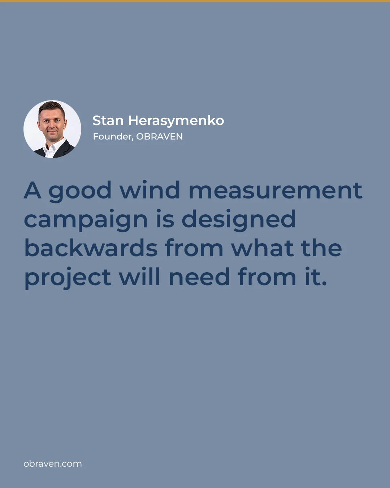
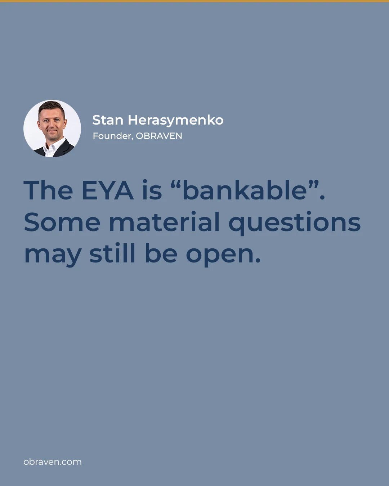

Wind analysis built around what the project has to decide next.
Three connected disciplines: measurement strategy, wind resource and energy yield, and independent review. The work follows the project stage, the data available, and who will rely on the result.
- Measurement strategy
- Data quality and representativeness
- Long-term wind climate
- Wind flow
- Layout
- Energy yield and losses
- Uncertainty
- Use and reliance
The sequence holds, and a project goes round it many times before financing. A loop can start at any stage: the campaign is adjusted, a new data package arrives, the design develops. The finance-stage EYA may be iteration 50.
Measurement strategy and resource evidence
Start with the uses the data must support – resource assessment, energy yield, site suitability, wind flow across the layout – then choose the campaign.
OBRAVEN defines the evidence need, leads the strategy, supports procurement, and reviews whether the campaign is delivering. Acting for the client, it can manage the whole campaign: the specification, the contractor shortlist, oversight of deployment, verification of the installation on site, and monitoring of the data. The measurement contractor is appointed by, and contracts with, the client; equipment supply, installation, and field maintenance stay with that contractor, and OBRAVEN works alongside them.

Design
- Later uses the data must support
- Variables, locations, heights, and measurement route
- Masts, ground-based lidar, floating lidar, and other remote sensing
- Duration, redundancy, staging, and relocation logic
Procure
- Technical specifications and tender inputs
- Supplier proposals, options, and exclusions
- Data, documentation, and acceptance requirements
- Supplier duties for maintenance, data recovery, quality checks, and escalation
- Alignment with the later EYA and intended reliance route
Operate and review
- Data availability and quality
- Material gaps or interruptions
- Whether to extend, relocate, supplement, or close
- A measurement history usable for later assessments
Why whole years matter in a campaign
Every campaign that could have started at this point in any month since 1996, by its length. Twelve months land within about 10% of the thirty-year mean. Here, eighteen months get no closer: the extra half-year counts one season twice. For the mean, the next gain comes at two full years. Extra months still help in other ways – they cover gaps and lengthen the overlap with the long-term reference. One side of campaign length only. The right length for a project depends on more than this.
How this figure was made
ERA5 reanalysis, hourly, at the grid point nearest to Rathdrum (52.97° N, 6.30° W): wind speed at 100 m, whole years 1996–2025, as monthly means. Every run of consecutive calendar months, starting in any month: 349 runs of twelve months, 325 of thirty-six. Each run’s mean is set against the mean of all thirty years. At each length the pale band spans every run, and the dark band leaves out the highest 5% and the lowest 5%. The bands are the spread across start dates in one modelled record. They should not be read as a confidence interval or as a recommended duration. Contains modified Copernicus Climate Change Service information.
Offshore: lidar on floating platforms, fixed platforms, and lighthouses; scanning and dual-Doppler lidar – integrated with offshore layout, wake, and blockage questions.
Timing. A year of measurement takes a year, whatever the deadline. A small early scope can keep resource work off the critical path later: a strategy with trigger points, and a campaign that grows with the project.
Typical outputsCampaign strategy note · measurement-location recommendation · procurement specification or supplier evaluation · mast or lidar installation inspection report · monthly monitoring reports · campaign review findings · evidence-gap and assumptions register · recommended evidence pathway
An installation inspection covers a review of the mast design, sensor schedule, calibration certificates, and logger configuration before the visit; attendance on site during installation and commissioning; and a report on what was witnessed and on the first weeks of data. It is an independent review of the measurement set-up. It does not cover the mast’s structural design, and it does not replace accredited certification.
Where an assignment includes ongoing monitoring, outputs can include automated daily data checks, a weekly analyst check, monthly data cleaning with a monthly report, an issue register, and escalation recommendations. These are agreed per assignment and do not imply 24/7 operations, field repair authority, or a standing retainer.
Wind resource and energy yield
Build, update, or interrogate the energy yield basis, from measured resource to P-values, and show which assumptions change the result before the number is priced or relied on.
Data available
Modelled, met mast, and lidar data; long-term reference and climate information; operational and neighbouring project data; layout, turbine technology, and buildable area.
Representative wind climate
Data quality and representativeness; long-term adjustment and climate change sensitivity; shear, veer, turbulence, and air density; spatial wind flow modelling.
Project design
Layout optimisation and operating modes; internal, external, and long-range wakes; wind farm blockage; future turbine technology and supplied constraints.
Production, losses, and uncertainty
Gross and net AEP; availability, loss factors, and curtailment; P50, P75, P90, P99, or other exceedance levels where the evidence supports them, plus sensitivities; 10-minute, hourly 8760, and multi-year series.
Where the wind comes from
Turbines downwind of one another lose energy to wakes, so a layout is tested against the directions the wind actually comes from, as well as the mean speed.
- < 6 m/s
- 6–10
- 10–14
- 14+ m/s
How this figure was made
ERA5 reanalysis, hourly, at the grid point nearest to Rathdrum (52.97° N, 6.30° W): wind speed and direction at 100 m, whole years 1996–2025 – 262,992 hours. Sixteen sectors of 22.5°, four speed bands. Modelled wind at one grid point. A real layout is tested against measured or site-modelled directions. Contains modified Copernicus Climate Change Service information.
How far a short record can sit from the long-term mean
Over 47 years of modelled wind here, a single year ran from 10% below to 10% above the mean wind speed. Ten-year averages still ranged from 2% below to 3% above, and energy changes by more than the wind does. That variation is one reason short records are compared with a carefully chosen long-term reference before they are used to estimate long-term wind conditions.
How this figure was made
ERA5 reanalysis via Open-Meteo, hourly, at 53.00° N, 6.25° W – the neighbour of the grid point used in the other figures; the two agree year by year. Annual means of wind speed at 100 m, 1979–2025 (47 years). The extract goes back to 1940; the decades before 1979 rest on far fewer observations and are left out. Every run of 1 to 20 consecutive years is set against the 47-year mean. Runs overlap, so the dots are not independent samples: this is what happened in one modelled record and should not be read as a probability. Contains modified Copernicus Climate Change Service information. Open-Meteo data: CC BY 4.0.
A little less wind is a lot less energy
Each dot is one year. In 2010 the wind was 9% down; through a simplified power curve constructed for this example, the energy was 25% down. Across the thirty years, 1% of wind went with about 2¼% of energy. A steady bias does much the same: lower every hour’s wind by 1% and the energy falls by 2.2%. Both ratios depend on the turbine and the wind climate.
How this figure was made
ERA5 reanalysis, hourly, at the grid point nearest to Rathdrum (52.97° N, 6.30° W): wind speed at 100 m, whole years 1996–2025. Each hour’s wind is passed through a simplified power curve constructed for this example, which represents no real turbine: nothing below 3 m/s, rising with the cube of wind speed to full output at 11 m/s, nothing from 25 m/s. Annual energy and annual mean wind are each set against their thirty-year mean. The line is a least-squares fit through the origin: 2.25. Separately, lowering every hour’s wind by 1% lowers the energy by 2.20%. Both depend on this turbine and this wind climate: a different turbine class, with a different rated wind speed, gives a different ratio. Neither is an uncertainty or a P90. Contains modified Copernicus Climate Change Service information.
The year in 8,760 hours
Every hour of the year, averaged over thirty years: 365 days across, 24 hours down, darker is windier. In winter the hour of the day makes little difference. In summer the wind is lowest in the early morning and peaks in mid-afternoon. The gold curves are sunrise and sunset.
How this figure was made
ERA5 reanalysis, hourly, at the grid point nearest to Rathdrum (52.97° N, 6.30° W): wind speed at 100 m, whole years 1996–2025; 29 February left out. For each day of the year and hour of the day, the mean over thirty years, then a fifteen-day running mean along the calendar. Touching a week gives the lowest and highest of its twenty-four hourly means. These are thirty-year averages; single hours were calmer and windier. Colour runs from 5.0 m/s (palest) to 8.5 m/s (darkest). The image is 365 by 24 pixels, one for each hour. Sunrise and sunset are calculated for the same point; all times are GMT, so there is no summer-time step. The curves are there for reference only. Contains modified Copernicus Climate Change Service information.
Typical outputsResource assessment · working or formal EYA · layout and turbine comparison · scenario-ranking matrix · uncertainty assessment · 8760 or multi-year time-series · controlled results pack
Independent review and bankability
An energy yield number can be technically competent and still be the wrong basis for the decision now being made.
OBRAVEN reviews the data, assumptions, methods, and intended use behind existing cases – consultant, seller, OEM, or inherited – and identifies where further analysis would change confidence or direction. A useful review can also conclude that further spend is not justified.
Before financing, it is also worth asking whether anything just outside accepted practice could matter for this project: farm-to-farm wakes, floating-platform effects, climate sensitivity.
At financing. OBRAVEN prepares full, independent energy yield assessments to the standard a financing requires. Which assessment a lender relies on is the lender’s decision; where it appoints its own adviser, OBRAVEN can act on the owner’s side: support the evidence pathway, prepare the brief, support the selection, and challenge the work. Intended use, review responsibilities, and any specialist sign-off are agreed per assignment.

Typical workConsultant, seller, or OEM yield-case review · inherited-model and assumption challenge · acquisition and investment review · independent energy yield assessment for financing · financing preparation · repowering review · reconciliation of competing cases · formal EYA brief, RFP, and adviser evaluation · owner-side working yield estimate
Typical outputsRed-flag review · findings and challenge log · assumptions and evidence register · sensitivities · bankability-readiness note · priority list for further work
Solar and hybrid
Wind is OBRAVEN’s deepest technical base. On solar, storage, and hybrid projects, OBRAVEN reviews resource, yield, and performance assumptions and their business-case consequences. It does not do detailed equipment design.
Bring one live project question.
Send the project stage and the question ahead, the analysis and data already available, any deadline or project gate, and who will rely on the output.
- Whether OBRAVEN is the right choice
- The narrowest useful scope
- Output, timing, and fee basis
- Reliance and specialist boundaries
A short scoping call should end with a defined next step – or a clear conclusion that further work is not warranted.